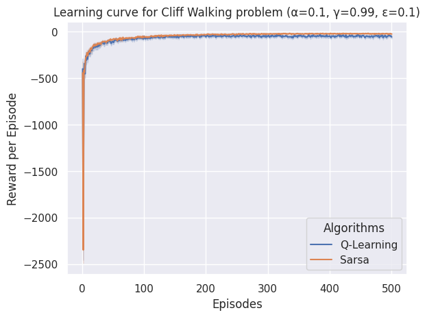
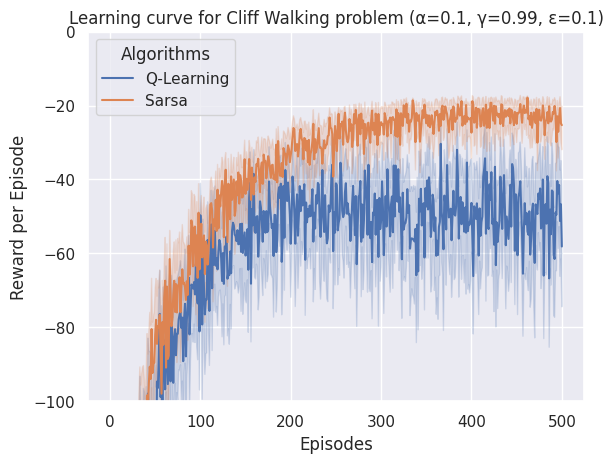

Como avaliar o desempenho de um agente?
O desempenho de um agente pode ser avaliado de diversas formas. A forma mais comum é através da curva de aprendizagem. A curva de aprendizagem mostra o desempenho do agente ao longo do tempo de treinamento. O desempenho pode ser medido em termos do objetivo de aprendizagem (e.g., retorno acumulado) bem como outras métricas secundárias.

Para gerar a figura acima da esquerda foi necessário executar o treinamento do agente N vezes com os mesmos hiperparâmetros, calculando a média e mostrando a variância via gráfico. No mesmo gráfico também é mostrado o retorno acumulado ótimo.
A figura acima do lado direito mostra outra métrica utilizada para acompanhar o aprendizado do agente. Neste caso, a métrica é a quantidade de passos necessários para o agente chegar no objetivo.
Abaixo são apresentados outros gráficos que ilustram o aprendizado do agente.

Exercício: comparar Q-Learning e SARSA no ambiente do Cliff Walking
A proposta desta atividade é reutilizar o código já feito no atividade sobre on-olicy e off-policy criando novos plots para apresentação dos resultados.
Nesta atividade você deverá executar o treinamento 100 vezes para cada algoritmo (Q-Learning e Sarsa) e calcular a média e a variância do retorno acumulado e da quantidade de passos necessários para o agente chegar no objetivo.
Crie dois gráficos, comparando Q-Learning e Sarsa, como os apresentados acima. Um para o retorno acumulado e outro para a quantidade de passos necessários para o agente chegar no objetivo.
Utilize os seguintes hiperparâmetros:
(
alpha=X,
epsilon=0.1,
epsilon_min=0.1,
epsilon_decay=1,
gamma=Y
)
os valores de \(\alpha\) e \(\gamma\) devem ser escolhidos por você.
Uma sugestão para a implementação dos gráficos é utilizar a biblioteca seaborn. Considere um dataframe com as seguintes colunas:
- algoritmo: Q-Learning ou Sarsa;
- episodio: número do episódio;
- retorno: retorno acumulado.
Execute N episódios em 100 treinamentos. Adicione todos os valores de episódio e retorno neste dataframe. Informe também qual é o algoritmo. Uma vez formado o dataframe, você pode utilizar o seguinte código para fazer o plot:
import seaborn as sns
sns.set_theme(style="darkgrid")
df = read.csv('data.csv')
sns.lineplot(
x="episodio",
y="retorno",
hue="algoritmo",
data=df)
Faça a entrega do código fonte e dos gráficos gerados via Github Classroom. Esta atividade é individual e o prazo de entrega é 08 de março de 2024 até às 23:30 horas.
Referências
As imagens acima foram retiradas do capítulo 2 do livro:
Stefano V. Albrecht, Filippos Christianos, and Lukas Schäfer. Multi-Agent Reinforcement Learning: Foundations and Modern Approaches. MIT Press, 2024.
Comentários sobre as entregas 
Por que é importante apresentar os hiperparâmetros utilizados na legenda da figura?
Um gráfico sem legenda e sem título não é autoexplicativo. O leitor não tem como saber o que está sendo mostrado.
Um tipo de gráfico apresentado mas que não mostra a diferença entre os algoritmos

Visualmente é um gráfico muito bem feito, mas não mostra a diferença entre os algoritmos. Além disso, tem algo de errado com o gráfico onde o eixo y é a quantidade de ações. Como pode ter ações com quantidade negativa?
Um gráfico quase perfeito:
Faltou uma descrição sobre quais hiperparâmetros foram utilizados.
Um gráfico com todos os elementos necessários:

Em algumas situações um zoom pode ser interessante:

Utilizando este gráfico talvez seja difícil de visualizar a diferença entre os algoritmos. Portanto, pode ser interessante fazer um zoom em uma parte do gráfico:

